Меню Documents
Меню Map (Карта) служит для просмотра карты и управления пространственными объектами, к которым осуществлена привязка документов. Меню имеет единственную опцию Caspian Sea.
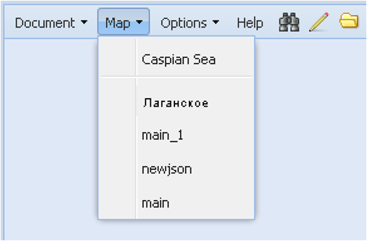При ее активации в рабочем окне Приложения появится специальный интерфейс с названием выбранной опции Caspian Sea, в котором имеются три поля: главное поле – для выведения карты в полноэкранном режиме, и два вспомогательных – для управления картографическими основами и тематическими слоями (слева) и для размещения легенды (справа). Вспомогательные поля имеют динамические границы и могут быть полностью свернуты.
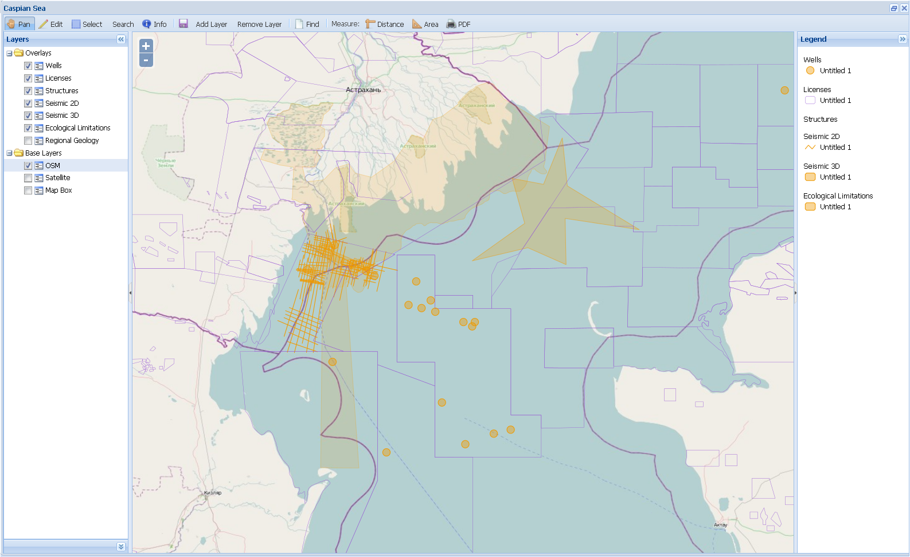Вспомогательное поле Layers (Слои) позволяет управлять видом отображаемой карты. Для этого пользователь должен выбрать и отметить галочкой удобную для него картографическую основу (Base Layers) (два вида картооснов или космический снимок), а также отметить необходимые для работы тематические слои (Overlays), отключив ненужные. Набор тематических слоев определяется администратором системы.
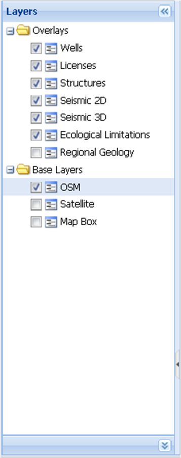
Вспомогательное поле Legend (Легенда) служит для распознавания отображённых на карте пространственных объектов.
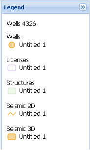
В главном поле карту можно уменьшать или увеличивать с помощью встроенного инструмента масштабирования , а также используя стандартные возможности колеса мыши: прокрутка от себя – приближение к объекту, на себя – отдаление от объекта.
Функциональные возможности главного поля представлены на панели меню интерфейса Caspian Sea.
1. Меню (Панорамировать карту) - перемещение карты в главном поле.
При активном инструменте можно перемещать видимую область карты, двигая курсор с зажатой левой кнопкой мыши. При этом курсор мыши поменяет вид с на 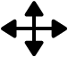.
2. Меню  (Редактировать) – изменение пространственных объектов, представленных на карте.
(Редактировать) – изменение пространственных объектов, представленных на карте.
При активном инструменте появится возможность воспользоваться окошком Edit Layer (Редактировать слой) и указать в нём вручную или выбрать из ниспадающего списка тот тематический слой, в котором предполагается осуществлять редактирование объектов.
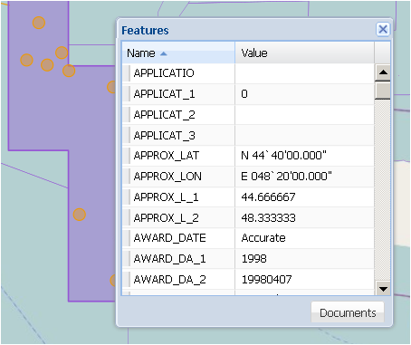
После выбора тематического слоя в правом верхнем углу поля карты появятся кнопки инструментария для редактирования. Вид некоторых кнопок может меняться в зависимости от типа редактируемого объекта. Кнопки активируются нажатием курсора на них, при этом они подсвечиваются жёлтым цветом.
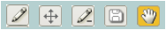
Кнопки 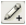, 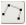, - инструменты Draw Point, Draw Line, Draw Polygon (Рисование объектов: точки, линии, полигоны). После активации курсор поменяет вид с на .
Для нанесения на карту точечного объекта следует подвести курсор к нужной точке и нажать кнопку мыши. В появившемся дополнительном окне Specify Attributes заполнить атрибутивные поля.
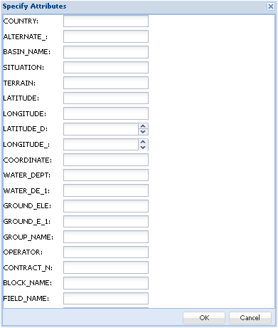
Для нанесения на карту линейного объекта надо нажать кнопку мыши в начальной точке (в точках поворота тоже разовое нажатие) и дважды нажать кнопку в конечной точке объекта. В появившемся дополнительном окне Specify Attributes заполнить атрибутивные поля.
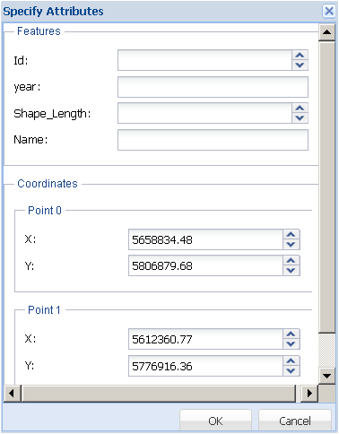
Для нанесения на карту полигонального объекта его территория очерчивается многоугольником, завершающая точка многоугольника ставится двойным нажатием левой кнопки мыши. В появившемся дополнительном окне Specify Attributes заполнить атрибутивные поля.
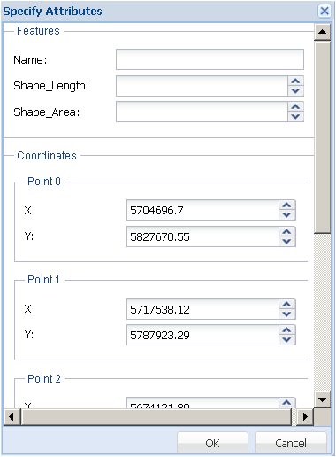
Кнопка - инструмент Modify Feature (Изменение местоположения или формы объекта). После активации следует навести курсор на редактируемый объект и нажать кнопку мыши, чтобы объект поменял цвет.
При нажатой кнопке можно:
- переместить точечный объект в новое место,
- изменить положение начальной и/или конечной точек линейного объекта,
- изменить положение угловых точек многоугольника у полигонального объекта.
Кнопка 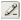 - инструмент Delete Feature (Удаление объекта). После активации навести курсор на удаляемый объект и нажать кнопку мыши.
Кнопка - инструмент Save Changes (Сохранение изменений). Сохраняет результаты редактирования объектов.
Кнопка - инструмент Pan Map (Панорамирование карты). Перемещение карты по полю. Кнопка активирована по умолчанию после входа пользователя в режим редактирования пространственных объектов.
3. Меню (Выбрать) – выбор одного или нескольких объектов на карте. При активном инструменте следует навести курсор на нужный объект, и нажать левую кнопку мыши. Выделенный объект поменяет цвет.
Выбрать несколько объектов можно, очертив их прямоугольной областью, перемещая курсор в рабочем окне карты с зажатой левой кнопкой мыши и одновременно нажатой клавишей Shift.
Снять выделение объекта можно, снова нажав на него курсором.
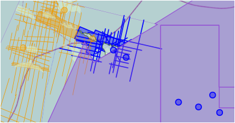
4. Меню (Найти) – поиск документов, имеющих привязку к пространственным объектам. Для получения информации о документах, связанных с пространственным объектом, необходимо выбрать его с помощью меню и нажать кнопку . Появится дополнительное окно Found Documents, в котором будут выведены найденные документы. Работа с этим окном аналогична действиям с командой Find (см. Простой поиск).
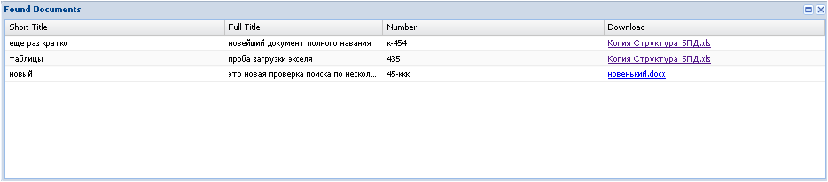
5. Меню (Измерить) – измерение длины или площади на карте. Для измерения расстояния надо активировать кнопку  , для измерения площади – кнопку 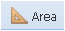.
, для измерения площади – кнопку 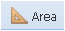.
Для измерения линейного объекта надо нажать кнопку мыши в начальной точке (в точках поворота тоже разовое нажатие) и дважды нажать кнопку в конечной точке объекта. В появившемся окне будет указана измеренная длина в км.
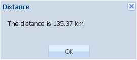
Для измерения площадного объекта его территория очерчивается многоугольником, завершающая точка ставится двойным нажатием левой кнопки мыши. В появившемся окне будет указана измеренная длина в км2.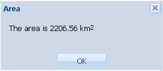